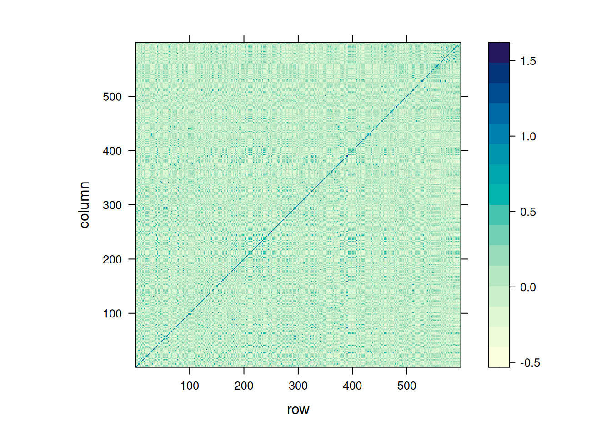
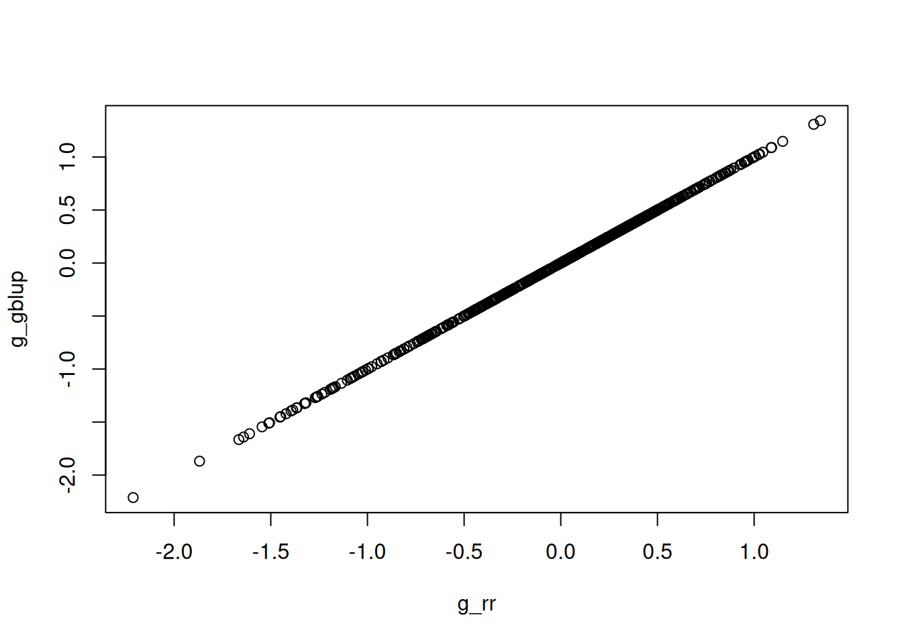
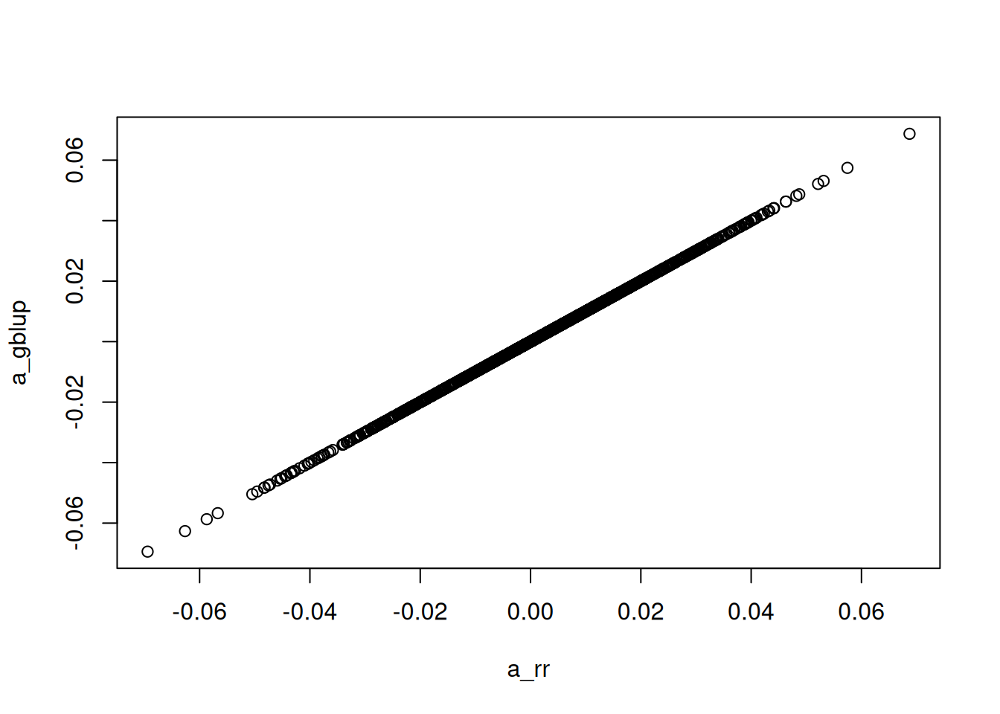

Genomic Prediction entails methods to predict breeding values based on phenotypic and molecular (SNP) data. The general concept is that the breeding value of an individual can be recovered by a linear regression on its genotype scores, i.e.
where \(\mathbf{M}\) is a matrix of genotype scores in {0,1,2} coding, denoting the copies of the major allele of SNP markers the individual carries, and \(\mathbf{\hat{a}}\) is a vector of average allele effects for those markers.
The estimated breeding value (\(\mathbf{\hat{g}}\), EBV) is then the sum of all the average allele effects for the marker alleles the individual carries.
2 Ridge Regression BLUP
The average allele effects can be estimated directly in a mixed effects model, treating the them as random effects:
If the individuals in \(\mathbf{M}\) are not representative of the general population (if they are top ranking individuals only, for example), we have to adjust the breeding values obtained from the marker effects by the population mean. In genomics, the population mean can be descriped by the allele frequencies in the general population:
\[
p_i = \frac{\sum_{i = 1}^{p} m_{b_i}}{n},
\]
where \(p_i\) denotes the allele frequency of the general population at marker \(i\) and \(m_{b_i}\) are the marker covariates at marker \(i\) of the general population. Oftentimes, \(\mathbf{M}\) is used as being representative of the general population, which is ususally not the case.
In order to adjust the EBVs from a genomic prediction model to represent the deviations from the population mean, we subtract the average EBV of that population:
3 GBLUP - an equivalent Ridge Regression Animal Model
Instead of doing regression on the marker covariates directly, we can also generate a Gaussian Kernel from those covariates. That kernel is commonly referred to as the genomic relationship matrix, and we obtain it like this:
where \(\bar{\mathbf{M_i}} = \mathbf{M_i} - 2p_i\). The centering of the genotypes guarantees that our EBVs reflect a deviation from the general population, and the scaling (division by \(tr(\bar{\mathbf{M}}\bar{\mathbf{M}}') / n\)) that our estimated variance components mimic an additive genetic variance.
The GBLUP model then becomes:
\[
\mathbf{y} = \mu + \mathbf{g} + \mathbf{e}
\]
with \(\mathbf{g} \sim MVN(0, \mathbf{G}\sigma_{g}^{2}\)).
It is important to note that both models, the ridge regression marker model and GBLUP are statistically identical and result in the same EBVs. So we can chose the model that is most convenient to fit computationally.
4 GBLUP examples in R
First we will be preparing a common dataset for the upcoming excercises
library(BGLR)library(rrBLUP)library(ggplot2)library(knitr)library(lattice)# load the "wheat" data set from BGLRdata(wheat)# extract one phenotypey = wheat.Y[,1]# the marker covariatesM = wheat.X# average allele frequencies ("p")p =colMeans(M) /2# center our Marker covariatesMc =sweep(x = M,MARGIN =2,FUN ="-",STATS =2* p )# compute G matrixMMdash = Mc %*%t(Mc)G = MMdash /mean(diag(MMdash))# look at genomic relationshipslevelplot(G)

With the basic dataset established, we now have many options to fit the ridge regression marker or GBLUP model.
4.1 Ridge Regression Marker Model
# design matrix for random effects (marker covariates become design matrix)Z = Mc# design matrix for fixed effects (only intercept)X =array(1, dim =c(length(y), 1))# fit the model with MLmod_rr =mixed.solve(y = y,X = X,Z = Z,method ="ML" )# extract marker effectsa_rr = mod_rr$u# predict breeding values from the modelg_rr =as.numeric(Z %*% a_rr)# extract variance componentsvar_a_rr = mod_rr$Vuvar_e_rr = mod_rr$Ve# we get the "additive genetic" variance, by rescaling the variance component for# the marker effectsvar_g_rr = mod_rr$Vu *mean(diag(MMdash))
4.2 GBLUP Model
# fit the model with MLmod_gblup =mixed.solve(y = y,K = G, # here we pass the genomic relationship matrix as kernelmethod ="ML" )# extract breeding valuesg_gblup = mod_gblup$u# obtain marker effects from a GBLUP modelMMdash_tmp = MMdashdiag(MMdash_tmp) =diag(MMdash_tmp) +0.00001a_gblup =as.numeric(t(Mc) %*%solve(MMdash_tmp, g_gblup))# extract variance componentsvar_g_gblup = mod_gblup$Vuvar_e_gblup = mod_gblup$Ve
4.3 Check equivalence of models
# plot breeding values from both modelsplot(g_rr, g_gblup)

# plot marker effects from both modelsplot(a_rr, a_gblup)

# some summariessummary(lm(g_rr ~ g_gblup))
Call:
lm(formula = g_rr ~ g_gblup)
Residuals:
Min 1Q Median 3Q Max
-1.880e-06 -3.197e-07 2.300e-10 2.997e-07 1.278e-06
Coefficients:
Estimate Std. Error t value Pr(>|t|)
(Intercept) 4.354e-16 2.041e-08 0 1
g_gblup 1.000e+00 3.618e-08 27638903 <2e-16 ***
---
Signif. codes: 0 '***' 0.001 '**' 0.01 '*' 0.05 '.' 0.1 ' ' 1
Residual standard error: 4.994e-07 on 597 degrees of freedom
Multiple R-squared: 1, Adjusted R-squared: 1
F-statistic: 7.639e+14 on 1 and 597 DF, p-value: < 2.2e-16
summary(lm(a_rr ~ a_gblup))
Call:
lm(formula = a_rr ~ a_gblup)
Residuals:
Min 1Q Median 3Q Max
-8.103e-08 -1.415e-08 2.870e-10 1.360e-08 8.062e-08
Coefficients:
Estimate Std. Error t value Pr(>|t|)
(Intercept) 7.978e-10 6.017e-10 1.326e+00 0.185
a_gblup 1.000e+00 3.223e-08 3.102e+07 <2e-16 ***
---
Signif. codes: 0 '***' 0.001 '**' 0.01 '*' 0.05 '.' 0.1 ' ' 1
Residual standard error: 2.15e-08 on 1277 degrees of freedom
Multiple R-squared: 1, Adjusted R-squared: 1
F-statistic: 9.624e+14 on 1 and 1277 DF, p-value: < 2.2e-16
In order to assess the performance of our genomic prediction models, we can run a cross validation scheme, in which we train marker effects with a subset of the data and predict the EBVs of the left out samples based on the training model.
# define function to create cross validation samplescCV <-function(y, folds=5, reps=1, matrix=FALSE, seed=NULL) {if(!is.vector(y)) stop("y must be a vector")if(folds <2) stop("'folds' must be larger than one")if(reps <1) reps =1 reps =as.integer(reps) folds =as.integer(folds) isy <- (1:length(y))[!is.na(y)] n_vec <-rep(NA,folds) start <-rep(NA,folds) end <-rep(NA,folds) n_vec[1:(folds-1)] <-round(length(isy)/folds,digits=0) n_vec[folds] <-length(isy) -sum(n_vec[1:(folds-1)])for(j in1:folds) {if(j==1) { start[j] =1 } else { start[j] = end[j-1]+1 } end[j] =sum(n_vec[1:j]) } count=0 cv_pheno <-list(folds*reps)if(missing(seed)) seed =as.integer((as.double(Sys.time())*1000+Sys.getpid()) %%2^31)set.seed(seed)for(i in1:reps) { ids <-sample(isy,length(isy),replace=F)for(j in1:folds) { count=count+1 y_temp = y y_temp[ids[start[j]:end[j]]] <-NA cv_pheno[[count]] <- y_temp } }if(matrix) {return(matrix(unlist(cv_pheno),nrow=length(y),ncol=length(cv_pheno),byrow=FALSE)) } else {return(cv_pheno) }}# create 5 fold cross validation samplescvs =cCV(y, folds =5, reps =10)# run cross validationpred =rep(as.numeric(NA), length(y))for(i in1:length(cvs)) pred[is.na(cvs[[i]])] =mixed.solve(y = cvs[[i]], K = G)$u[is.na(cvs[[i]])]# if we have more than 1 repition, need to use thispreds =list()for(i in1:length(cvs)) { this_pred =mixed.solve(y = cvs[[i]], K = G)$u[is.na(cvs[[i]])] this_y = y[is.na(cvs[[i]])] preds[[i]] =data.frame(pred = this_pred, y = this_y)}cors =unlist(lapply(preds, function(x) cor(x$pred, x$y)))# Combine all predictions into a single vector if neededpred <-unlist(lapply(preds, function(x) x$pred))# plot predictes vs observedplot(pred, y)# prediction accuracycor(pred, y)# check biassummary(lm(pred ~ y))
5 Bayesian Alphabet
A linear mixed model with a series of independent random effects has the following form:
In the Bayesian Alphabet, the prior distributions on the marker effects is altered to generally generate a sparsity pattern on the marker effects, meaning feature selection. This feature selection is achieved by using spike-and-slap mixture priors. Those priors have a point mass at zero and a usually normal slap. Noisance marker effects ideally get absorbed in the point mass at zero, whereas relevant markers have a higher mixture probability for the slap, and get a significan effect size.
Binary Traits (0/1) can be modelled with generalized linear models in which the expectation of the observations are mapped to a linear predictor comprised of random and fixed effects. The likelihood for the data is a Bernoulli distribution in our case, with success probably linked to the linear predictor through the probit function:
The following shows an implmementation of that model in Jags:
if (!require("rjags")) install.packages("rjags")library(rjags)BayesCJags <-function(y, Z, threshold =FALSE, niter =5000, burnin =2500, betaPriorAlpha =2, betaPriorBeta =5) {################################## First the model strings ################################### probit threshold model modelstringThreshold =" model { for (i in 1:n) { y[i] ~ dbern(prob[i]) probit(prob[i]) <- alpha + inprod(X[i,],beta) } for (j in 1:p) { ind[j] ~ dbern(pind) betaT[j] ~ dnorm(0,tau) beta[j] <- ind[j] * betaT[j] } tau ~ dgamma(1,0.001) alpha ~ dnorm(0,0.0001) # pind ~ dunif(0,1) pind ~ dbeta(betaPriorAlpha, betaPriorBeta) } "# and the gaussian model modelstringGaussian =" model { for (i in 1:n) { y[i] ~ dnorm(alpha + inprod(X[i,],beta), tauE) } for (j in 1:p) { ind[j] ~ dbern(pind) betaT[j] ~ dnorm(0,tauB) beta[j] <- ind[j] * betaT[j] } tauB ~ dgamma(1,0.001) alpha ~ dnorm(0,0.0001) # pind ~ dunif(0,1) pind ~ dbeta(betaPriorAlpha, betaPriorBeta) tauE ~ dgamma(1, 0.001) } "# the default (gaussian) modelstring <- modelstringGaussianif(threshold) { modelstring = modelstringThreshold }# some checksif(!(is.numeric(y) |is.numeric(y) |is.vector(y))) stop("y must be a numeric/integer vector")if(threshold &length(unique(y)) >2) stop("y must be 0/1 for the threshold model")if(!is.matrix(Z)) stop("Z must be a numeric matrix")if(nrow(Z) !=length(y)) stop("Z must have as many rows as elements in y")# make the data.frame n =length(y) p <-ncol(Z) data =list(y = y, X=Z ,n = n,p = p, betaPriorAlpha = betaPriorAlpha, betaPriorBeta = betaPriorBeta) init =list(alpha =0, betaT =rep(0,p), pind =0, ind =rep(0,p), tauB =1)if(!threshold) init$tauE =1load.module("glm") model =jags.model(textConnection(modelstring),data = data, inits = init)# burninupdate(model, n.iter = burnin)# sampling output =coda.samples(model = model,variable.names =names(init),n.iter = (niter - burnin), thin =1)return(output)}# create "binary" trait from our phenotypesmu_y =mean(y)y_binary =rep(0, length(y))y_binary[y > mu_y] =1Mc_small = Mc[, 1:50]# run modelmod_bcpi <-BayesCJags(y = y_binary, Z = Mc_small, threshold =TRUE, niter =500, burnin =250, betaPriorAlpha =2, betaPriorBeta =5)# gaussian responsemod_bcpi_gaussian <-BayesCJags(y = y, Z = Mc_small, threshold =FALSE, niter =500, burnin =250, betaPriorAlpha =2, betaPriorBeta =5)